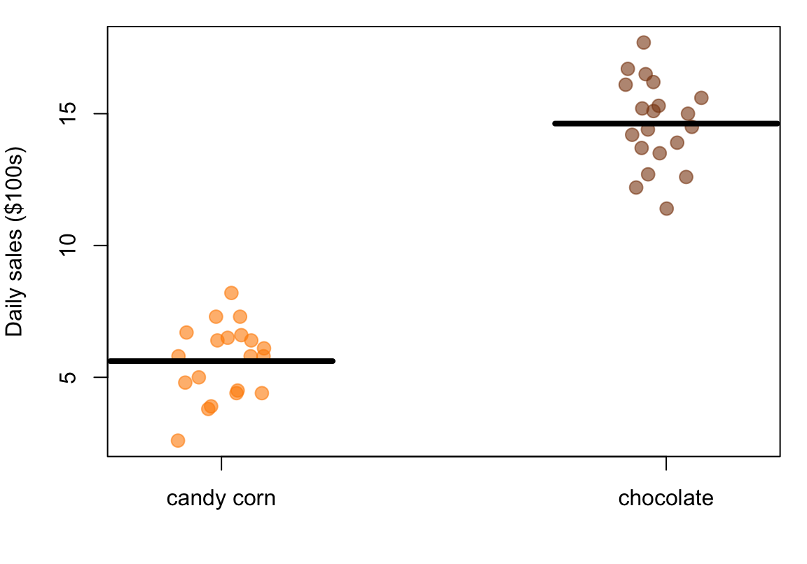
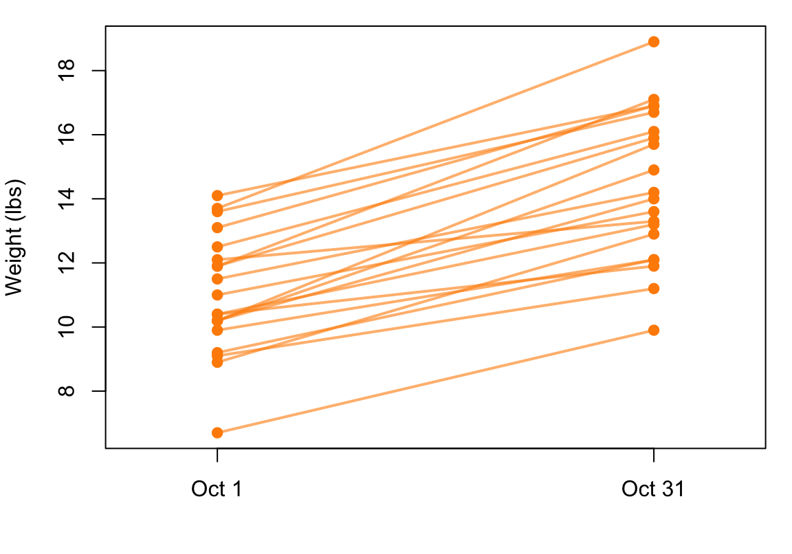

PSYC 2020-A01 / PSYC 6022-A01 | Lab 11
A population has a mean of \(\mu\) = 50. A sample of \(n\) = 16 has a mean of \(\bar{x}\) = 56 and a standard deviation of \(s\) = 8. What is the value of the \(t\) statistic?
For a one-sample \(t\) test with \(n\) = 25, the degrees of freedom equal [_____]. As the degrees of freedom increase, the shape of the \(t\) distribution becomes more similar to the [_____] distribution.
\(df = n - 1 =\) 24
Normal (\(z\)): with more \(df\), the tails get thinner and \(t \approx z\)
Two researchers each compute a 95% CI for the same population mean. Researcher A uses \(n\) = 25, and Researcher B uses \(n\) = 100. Researcher [_____] will obtain the narrower interval, because increasing the sample size makes the standard error [_____].
Researcher B: increasing \(n\) makes the standard error smaller
\(SE = s / \sqrt{n}\): \(\sqrt{25} = 5\) vs. \(\sqrt{100} = 10\), so B’s SE (and CI width) is half of A’s
Increasing the sample size makes the value of the \(t\) statistic [_____], but it leaves the value of Cohen’s \(d\) [_____].
\(t\) gets larger (farther from 0); \(d\) stays unchanged
\[t = \frac{\bar{x} - \mu}{s / \sqrt{n}} \quad \text{has } \sqrt{n} \qquad d = \frac{\bar{x} - \mu}{s} \quad \text{has no } n\]
qt()Learning objectives: R: computing t by hand, t.test() with var.equal = TRUE and paired = TRUE
Statistics: pooled SD, difference scores, degrees of freedom, choosing the right t-test
Last lab: qt() gives the critical t, just like qnorm() gives the critical z. \(\alpha\) = .05
| \(df\) | one-tailed | two-tailed |
|---|---|---|
| 3 | 2.35 | ±3.18 |
| 37 | 1.69 | ±2.03 |
Smaller \(df\) → thicker tails → bigger cutoff
Two tails → \(\alpha\) is split → bigger cutoff
| Test | Question | Example |
|---|---|---|
| One-sample (Lab 9) | Does one group differ from a known value \(\mu\)? | Do cars average 30 mpg? |
| Independent samples | Do two separate groups differ? | Treatment vs. control; GT vs. UGA salaries |
| Paired samples | Do the same people differ across two conditions/times? | Stress before vs. after an exam |
Ask: is each score in group 1 matched to a specific score in group 2?
○ No → independent ○ Yes (same person, twin, matched pair) → paired
A store records daily sales (in $100s) of candy corn on 20 days and chocolate on 20 other days. Do they sell differently?
\(H_0\): \(\mu_1 = \mu_2\) \(H_1\): \(\mu_1 \ne \mu_2\)

We combine the two groups’ variability into one estimate, weighting each by its \(df\):
\[s_p^2 = \frac{(n_1 - 1)s_1^2 + (n_2 - 1)s_2^2}{n_1 + n_2 - 2} \qquad s_p = \sqrt{s_p^2}\]
With equal group sizes, this is just the average of the two variances:
\[s_p^2 = \frac{s_1^2 + s_2^2}{2}\]
ⓘ Pooling assumes the two groups have roughly equal variances, which is why we’ll write var.equal = TRUE in R
\[t = \frac{\bar{x}_1 - \bar{x}_2}{s_p\sqrt{\frac{1}{n_1} + \frac{1}{n_2}}} \qquad df = (n_1 - 1) + (n_2 - 1) = n_1 + n_2 - 2\]
○ Numerator: how far apart the two group means are
○ Denominator: the standard error of that difference
○ We lose one \(df\) per group, because we estimate two means
\(s_p\) = 1.53
\(t\) = −18.68, \(df\) = 38
Cutoff = ±2.02
|−18.68| > 2.02 → reject \(H_0\): candy corn and chocolate sell differently (chocolate sells more!)
t.test()○ sales ~ candy: outcome ~ grouping variable
○ var.equal = TRUE: use the pooled SD (the test we did by hand)
Same answer: \(t\)(38) = −18.68, \(p\) < .001
95% CI for \(\mu_1 - \mu_2\): [−9.99, −8.03], which excludes 0
ⓘ Leave out var.equal and R runs Welch’s t-test, which doesn’t assume equal variances (note the decimal \(df\))
A farmer weighs the same 20 pumpkins (lbs) on Oct 1 and again on Oct 31. Did they gain weight?
Each Oct 31 weight is matched to an Oct 1 weight → paired
\(H_0\): \(\mu_D = 0\) \(H_1\): \(\mu_D \ne 0\)

Trick: turn two columns into one column of differences, then run a one-sample t-test on it against 0
\[d_i = x_{2i} - x_{1i} \qquad \bar{d} = \frac{\sum d_i}{n} \qquad s_d = \sqrt{\frac{\sum (d_i - \bar{d})^2}{n - 1}}\]
\[t = \frac{\bar{d}}{s_d / \sqrt{n}} \qquad df = n - 1\]
ⓘ \(n\) = number of pairs (20 pumpkins), not number of scores (40)
\(\bar{d}\) = 3.35 lbs
\(t\) = 12.45, \(df\) = 19
Cutoff = ±2.09
12.45 > 2.09 → reject \(H_0\): pumpkins gained weight during October
t.test()Same idea as Lab 9: a mean difference divided by an SD
Independent: \(d = \dfrac{\bar{x}_1 - \bar{x}_2}{s_p}\)
Paired: \(d = \dfrac{\bar{d}}{s_d}\)
Candy: \(d\) = −5.91
Pumpkins: \(d\) = 2.79
Both are huge (|d| > 0.8 is large)
ⓘ The effectsize package’s cohens_d() gives the same numbers, but by hand is fine for this class
Template: An [independent / paired] samples t-test showed that [DV] was [significantly / not significantly] different between [groups/conditions], \(t\)(df) = __, \(p\) = __, \(d\) = __.
Candy: An independent samples t-test showed that daily sales were significantly higher for chocolate (M = 14.63) than candy corn (M = 5.62), \(t\)(38) = −18.68, \(p\) < .001, \(d\) = −5.91.
Pumpkins: A paired samples t-test showed that pumpkins weighed significantly more on Oct 31 than on Oct 1 (mean gain = 3.35 lbs), \(t\)(19) = 12.45, \(p\) < .001, \(d\) = 2.79.
Pick the right test, run it, and write one sentence
mtcars: do automatic (am == 0) and manual (am == 1) cars differ in mpg?sleep: 10 people took two sleep drugs. Does extra sleep differ between drug 1 (group == 1, rows 1–10) and drug 2 (rows 11–20)?Check:
○ Independent: two separate groups → pool the SDs, \(df = n_1 + n_2 - 2\), t.test(y ~ group, var.equal = TRUE)
○ Paired: same subjects twice → difference scores, \(df = n - 1\) (pairs), t.test(x2, x1, paired = TRUE)
○ A paired t-test is just a one-sample t-test on the differences
○ Always report \(t\)(df), \(p\), and Cohen’s \(d\)